[,1] [,2] [,3] [,4] [,5]
[1,] -0.73745480 -1.2708067 1.6257197 0.8944260 -1.3686886
[2,] -0.60664204 0.6533451 -0.6131808 -0.8317054 -0.2820471
[3,] 1.81383566 -0.1627274 -0.8228885 -1.1183558 1.0298219
[4,] -1.48202810 0.5964813 0.9506755 -1.1449214 -1.2227628
[5,] 0.53312615 1.7117503 -1.0916979 0.5610340 0.6516250
[6,] 0.40723485 -0.3129580 0.3049802 0.2334778 -0.2996826
[7,] 0.01935135 -0.5164814 -0.7728700 -0.2243080 0.1674461STA 9890 - Fundamentals of ML: II. Linear Algebra Foundations
\[\newcommand{\R}{\mathbb{R}} \newcommand{\E}{\mathbb{E}} \newcommand{\V}{\mathbb{V}} \newcommand{\P}{\mathbb{P}} \newcommand{\C}{\mathbb{C}} \newcommand{\K}{\mathbb{K}} \newcommand{\Ycal}{\mathcal{Y}} \newcommand{\Xcal}{\mathcal{X}} \newcommand{\Ccal}{\mathcal{C}} \newcommand{\Hcal}{\mathcal{H}} \newcommand{\Ncal}{\mathcal{N}} \newcommand{\Fcal}{\mathcal{F}} \newcommand{\Ocal}{\mathcal{O}} \newcommand{\Pcal}{\mathcal{P}} \newcommand{\Ucal}{\mathcal{U}} \newcommand{\Dcal}{\mathcal{D}} \newcommand{\bbeta}{\mathbf{\beta}} \newcommand{\bone}{\mathbf{1}} \newcommand{\bzero}{\mathbf{0}} \newcommand{\ba}{\mathbf{a}} \newcommand{\bb}{\mathbf{b}} \newcommand{\bc}{\mathbf{c}} \newcommand{\bu}{\mathbf{u}} \newcommand{\bv}{\mathbf{v}} \newcommand{\bw}{\mathbf{w}} \newcommand{\bx}{\mathbf{x}} \newcommand{\by}{\mathbf{y}} \newcommand{\bz}{\mathbf{z}} \newcommand{\bf}{\mathbf{f}} \newcommand{\bX}{\mathbf{X}} \newcommand{\bA}{\mathbf{A}} \newcommand{\bB}{\mathbf{B}} \newcommand{\bC}{\mathbf{C}} \newcommand{\bD}{\mathbf{D}} \newcommand{\bU}{\mathbf{U}} \newcommand{\bV}{\mathbf{V}} \newcommand{\bI}{\mathbf{I}} \newcommand{\bH}{\mathbf{H}} \newcommand{\bW}{\mathbf{W}} \newcommand{\bY}{\mathbf{Y}} \newcommand{\bK}{\mathbf{K}} \newcommand{\argmin}{\text{arg\,min}} \newcommand{\argmax}{\text{arg\,max}} \newcommand{\MSE}{\text{MSE}} \newcommand{\Tr}{\text{Tr}}\]
Linear Algebra Review
In mathematics, a vector - random or otherwise - is a fixed-length ordered collection of numbers. When we want to be precise about the size of a vector, we often call it a “tuple”, e.g., a length-three vector is a “triple”, a length-four vector is a “4-tuple”, a length-five vector is a “5-tuple” etc..
So, these are all vectors:
- \((3, 4)\)
- \((1, 1, 1)\)
- \((1, 5, 6, 10)\)
When we want to talk about the set of vectors of a given size, we use the Cartesian product of sets. For two sets, \(A, B\), the product set \(A \times B\) is the set of all pairs, with the first element from \(A\) and the second from \(B\). In mathematical notation,
\[A \times B = \left\{(a, b): a \in A, b \in B\right\} \]
This set-builder notation is read as follows: “The Cartesian Product of \(A\) and \(B\) is the set of all pairs \((a, b)\) such that \(a\) is in \(A\) and \(b\) is in \(B\).”
If \(A\) and \(B\) are the same set, we define a Cartesian power as follows:
\[A^2 = A \times A = \left\{(a_1, a_2): a_1 \in A, a_2 \in A\right\}\]
Note that even though the sets \(A\) and \(A\) in this product are the same, the elements in each pair may vary. For example, if \(A = \{1, 2, 3\}\), we have
\[A^2 = \left\{(1, 1), (1, 2), (1, 3), (2, 1), (2, 2), (2, 3), (3, 1), (3,2), (3, 3)\right\}\]
Note that vectors are ordered pairs so \((2, 1) \neq (1, 2)\). From here, it should be pretty easy to convince yourself that set sizes play nicely with Cartesian products:
- \(|A \times B| = |A| |B|\)
- \(|A^k| = |A|^k\)
The most common set of vectors we use are those where each element is an arbitrary real number. The set of vectors of length \(n\) (\(n\)-tuples) is thus \(\R^n\). We rarely mix vectors of different lengths, so we don’t really have a name or notation for the “combo pack” \(\R^2 \cup \R^3 \cup \R^4\).
Conventionally, vectors are written in bold (if on a computer) or with a little arrow on top (hand written): so a vector called “x” would be denoted \(\bx\) or \(\vec{x}\). The elements of \(\bx\) are denoted by subscripts \(\bx = (x_1, x_2, \dots, x_n)\).
Vector Arithmetic
We have three arithmetic operations we can perform on general vectors. The simplest is scalar multiplication. A scalar is a non-vector number, i.e., a ‘regular’ number. Scalar multiplication consists of applying the scalar independently to each element of a vector.
\[\alpha\, \bx = \alpha\, (x_1, x_2, \dots, x_n) = (\alpha x_1, \alpha x_2, \dots, \alpha x_n)\]
For example, if \(\bx = (3, 4)\) and \(\alpha = 2\), we have \[\alpha\, \bx = (6, 8)\]
Note that the output of scalar multiplication is always a vector of the same length as the input.
We also have the ability to add vectors. This again is performed element-wise.
\[\bx + \by = (x_1, \dots, x_n) + (y_1, \dots, y_n) = (x_1 + y_1, \dots, x_n + y_n) \]
Note that we can’t add vectors of different lengths (recall our “no mixing” rule) and the output length is always the same as the input lengths.
Finally, we have the vector inner product, defined as:
\[\langle \bx, \by \rangle = x_1y_1 + x_2y_2 + \dots + x_ny_n \]
You might have seen this previously as the “dot” product. The inner product takes two length-\(n\) vectors and gives back a scalar. This structure might seem a bit funny, but as we’ll see below, it’s actually quite useful.
You might ask if there’s a “vector-out” product: there is one, with the fancy name “Hadamard product”, but it doesn’t play nicely with other tools, so we don’t use it very much.
These tools play nicely together:
- \(\alpha(\bx + \by) = \alpha \bx + \alpha \by\) (Distributive)
- \(\langle \alpha \bx, \by \rangle = \alpha \langle \bx, \by \rangle\) (Associative)
- \(\langle \bx, \by \rangle = \langle \by, \bx \rangle\) (Commutative)
Vector Length and Angle
We sometimes want to think about the “size” of a vector, analogous to the absolute value of a scalar. In scalar-world, we say “drop the sign” but there’s not an obvious analogue to a sign for a vector. For instance, if \(\bx = (3, -4)\) is \(\bx\) “positive”, “negative” or somewhere in beetween?
We note a trick from scalar-land: \(|x| = \sqrt{x^2}\). We can use the same idea for vectors:
\[ \|\bx\| = \sqrt{\langle \bx, \bx\rangle} = \sqrt{\sum_{i=1}^n x_i^2}\]
This quantity, \(\|\bx\|\), is called the norm or length of a vector. We use the double bars to distinguish it from the absolute value of a scalar, but it’s fundamentally the same idea.
In \(\R^2\), we recognize this formula for length as the Pythagorean theorem:
\[ \|(3, 4)\| = \sqrt{3^2 + 4^2} = \sqrt{25} = 5 \]
We also sometimes want to define the angle between two vectors. We can define this as:
\[ \cos \angle(\bx, \by) = \frac{\langle \bx, \by\rangle}{\|\bx\|\|\by\|} \Leftrightarrow \angle(\bx, \by) = \cos^{-1}\left(\frac{\langle \bx, \by\rangle}{\|\bx\|\|\by\|}\right)\]
We won’t use this formula too often for implementation, but it’s good to have it for intuition. In particular, we note that angle is a proxy for sample correlation, justifying the common vernacular of “orthogonal”, meaning “at right angles”, for “uncorrelated” or “unrelated.”
Matrices
An \(n\)-by-\(p\) array of numbers is called a matrix; here the first dimension is the number of rows while the second is the number of columns. So \[\bA = \begin{pmatrix} 1 & 2 \\ 3 & 4 \\ 5 & 6 \end{pmatrix}\] is a 3-by-2 matrix. We denote the set of matrices of a given size as \(\R^{n \times p}\), extending slightly the notation we use for vectors.
In this course, we will use matrices for two closely-related reasons:
- To organize our data
- To specify and manipulate linear models
Specifically, if we have \(n\) training samples, each of \(p\) covariates (predictors), we will arrange them in a matrix traditionally called \(\bX \in \R^{n \times p}\). Here, each row of \(\bX\) corresponds to an observation. Statisticians tend to call this matrix a design matrix because (historically) it was something designed as part of an experiment; the name got carried forward into the observational (un-designed) setting. You may also hear it called the ‘data matrix’.
Suppose we have a design matrix \(\bX \in \R^{n \times p}\) and a vector of regression coefficients \(\bbeta \in \R^p\). We can use matrix multiplication to make predictions about all observations simultaneously.
Specifically, recall that the standard (multivariate) linear model looks like:
\[\hat{y} = \sum_{i=1}^p x_i\beta_i\]
For a single observation, this can be written in vector notation as
\[\hat{y} = \bx^{\top}\bbeta\]
If we have \(n\) observations, we can stack them in a vector as:
\[\begin{pmatrix} \hat{y}_1 \\ \hat{y}_2 \\ \vdots \\ \hat{y}_n \end{pmatrix} = \begin{pmatrix} \bx_1^{\top}\bbeta \\ \bx_2^{\top}\bbeta \\ \vdots \\ \\bx_n^{\top}\bbeta \end{pmatrix}\]
We can connect this with our design matrix \(\bX\) by using the above as a definition of matrix-vector multiplication:
\[\hat{\by} = \bX\bbeta = \begin{pmatrix} \bx_1^{\top}\bbeta \\ \bx_2^{\top}\bbeta \\ \vdots \\ \\bx_n^{\top}\bbeta \end{pmatrix}\]
Here, matrix multiplication proceeds by taking the inner product of each row with the (column) vector \(\bbeta\). This may feel a bit unnatural at first, but with a bit of practice, it will become second nature. Note that we don’t need a transpose on \(\bX\): the multiplication ‘auto-transposes’ in some sense.
It is always helpful to keep track of dimensions when doing matrix multiplication: checking that matrices and vectors have the right size is a useful way to make sure you haven’t done anything too wrong. In general, we can only multiply a \(m\)-by-\(n\) matrix with a \(n\)-by-\(p\) matrix and the result is a \(m\)-by-\(p\) matrix (the \(n\)-dimension gets reduced to a scalar by the inner product). Formally, we have something like
\[ \R^{m \times n} \times \R^{n \times p} \to \R^{m \times p}\]
For purposes of this, you can always think of an \(n\)-vector as a \(n\)-by-1 “column” matrix, giving us:
\[\underbrace{\bX}_{\R^{n \times p}} \underbrace{\bbeta}_{\R^p} = \underbrace{\hat{\by}}_{\R^{n \times 1}}\]
Matrix as Linear Function
In this set up, notice that \(\bX\) plays an interesting role: it takes one vector \(\bbeta\) and outputs a different vector \(\by\). Looking at it this way, we can think of \(\bX\) as a function:
\[\bX: \bbeta \in \R^p \to \by \in \R^n\]
This is a bit unnatural from a statistical point of view: we tend to think of the parameters (\(\bbeta\)) acting on the data (each \(\bx\)) to produce outputs, but mathematically it’s entirely natural.
To step away from the ‘data’ interpretation, let’s just talk about a general matrix \(\bA \in \R^{m \times n}\). We can (pre-)multiply any \(\bw \in \R^{m}\) by \(\bA\) to get back a new vector \(\bz \in \R^n\). Symbolically, this is just
\[\bz = \bA \bw\]
which is much easier to say and to write. The function defined by \(\bA\) has several nice properties:
-
it plays nicely with addition:
\[\begin{align*} \bz_1 &= \bA \bw_1 \\ \bz_2 &= \bA \bw_2 \\ \bz_1 + \bz_2 &= \bA\bw_1 + \bA\bw_2 \\ &= \bA(\bw_1 + \bw_2) \end{align*}\]
(Why is this true?)
-
it plays nicely with scalar multiplication:
\[ \bA(\alpha \bw) = \alpha (\bA \bw)\]
(Again, why is this true?)
Taken together, we say that these properties make \(\bA\) a linear function or a linear operator. Note that, in this context, linear is maybe a bit more restrictive than the ‘middle school’ definition. Our properties require “zero-in/ zero-out”: if we take \(\alpha = 0\) in the scalar multiplication rule, we have:
\[\bA(0 \, \bw) = 0\, (\bA \bw) \implies \bzero_n = \bA \bzero_m\]
where \(\bzero_{m}, \bzero_n\) are the all-zero vectors of length \(m, n\) respectively. As such, a ‘linear’ function you might have seen before like
\(y = 2x + 3\)
is not linear in our sense because it maps \(0\) to \(3\), not back to \(0\) Linear + constant is called “affine” in advanced mathematics, so middle school ‘linear functions’ are really affine.
This might feel like a limitation, but true (non-affine) linearity is incredibly useful in mathematical modeling as it guarantees us that rules like “double the input, double the output” or “negate the input, negate the output” will always hold. These types of relationships are so powerful and ubiquituous that this slightly-restrictive is definitely worth using.1
While it is clear that any ‘matrix multiply function’ is a linear function, it actually turns out that any linear function can be written as a matrix multiplication!2 This deep fact is the fundamental reason why linear algebra is such a beautiful and beloved part of mathematics: any linear function can be expressed using a small set of numbers–great for computational work–and any set of numbers arranged in a rectangular array can be understood as a function. By giving simultaneous to ‘data tools’ and ‘function tools’, we have a lot of power at our fingertips.
Combining Matrices
Given two matrices, how might we combine them? For addition, the answer is relatively obvious: we simply add the corresponding elements together, which we can write symbolically as:
\[(\bA + \bB)_{ij} = \bA_{ij} + \bB_{ij}\]
This reads as “the \((i, j)\) element of the matrix \(\bA + \bB\) is the \((i, j)\) element of matrix \(\bA\) plus the \((i, j)\) element of matrix \(\bB\). From this definition it is clear that we can only add together matrices of corresponding dimension.
This follows from the idea that a matrix is just a set of vectors “squished together” and our rule for vector addition.
Scalar multiplication again is straightforward and follows from the corresponding vector operation:
\[(\alpha\, \bA)_{ij} = \alpha\, \bA_{ij}\]
With these, we can define the (additive) identity: that is, the matrix which, when added to another doesn’t change the value, by \(\bzero_{m \times n}\), the \(m \times n\) matrix of all zeros. The additive inverse (the matrix that you add to get back to the additive identity) is just
\[(-\bA)_{ij} = -(\bA_{ij})\]
i.e., elementwise negation.
Multiplication is trickier: recall that a matrix \(\bA\) also defines a function $f_{}. If we want matrix multiplication to follow normal associativity rules, we need to ensure
\[\bA(\bB \bx) = (\bA\bB) \bx \quad \text{ for all } \bx, \bA, \bB\]
Achieving this is a little less obvious. First, let’s look at the dimensions, suppose \(\bx \in \R^{n}\) and \(\bB \in \R^{m \times n}\). This gives us \(\bB\bx \in \R^m\) so the second dimension of \(\bA\) must be \(m\). We can actually allow arbitrary size for the first dimension of \(\bA\) so we take \(\bA \in \R^{l \times m}\), \(\bB \in \R^{m \times n}\), and \(\bx \in \R^n\). From this we see that \(\bA, \bB\) don’t have to be the same dimension (as we required) for addition, only that they conform, i.e., the number of columns of \(\bA\) equals the number of rows of \(\bB\).
From here, it is possible, albeit cumbersome, to show that
\[(\bA\bB)_{ij} = \langle \bA_{i\cdot}, \bB_{\cdot j} \rangle = \sum_{k} \bA_{ik}\bB_{kj}\]
Here the \(\cdot\) subscript means “take the whole row/column”. This definition is not so simple, but if you take a look at it, you’ll see that it’s really built up from a bunch of vector multiplications, so maybe it’s not too weird.
Looking at our definition, we note that \(\bA\bB\) does not necessarily equal \(\bB\bA\). In fact, it’s entirely possible for \(\bB\bA\) to not even exist if the sizes don’t match up.
A multiplicative identity is not too hard to identify: we call it \(\bI\) and it is given by
\[\bI = \begin{pmatrix} 1 & 0 & 0 & \dots & 0 \\ 0 & 1 & 0 & \dots & 0 \\ 0 & 0 & 1 & \ddots & 0 \\ 0 & 0 & 0 & \dots & 1 \end{pmatrix}\]
That is, \(\bI\) is a square matrix with ones on the diagonal and zeros everywhere else. You should be able to convince yourself that \(\bI\bx = \bx\) for all \(\bx\): check that you can show this directly (by the definition of matrix multiplication) or conceptually (thinking in terms of functions, what do we need \(\bI\) to look like as a “do nothing” function).
Matrix (multiplicative) inverses are harder to say much about. Given a matrix \(\bA\), we define its inverse as a matrix \(\bA^{-1}\) that satisfies \(\bA\bA^{-1}=\bA^{-1}\bA = \bI\). If such a matrix exists, it is unique and so we can justify referring to \(\bA^{-1}\), but we don’t know whether it actually always exists. It’s not easy to just look at a matrix and tell whether it has an inverse, but we will discuss some conditions below.
The potential non-existence of inverses shouldn’t bother you too much - it’s the matrix equivalent of the fact that \(0^{-1}\) isn’t defined for ‘regular’ numbers - but it is an annoying little technical thing we need to be aware of.
Rotation / Orthognal Matrices
While all linear functions are nice, certain operations are particularly nice and get their own names. One is the concept of ‘rotation’: operations which take a \(n\)-vector and return a different \(n\)-vector with the same length.3 (No stretching, only turning - hence rotation.) Clearly, these are square matrices since they go from \(\R^n\) to \(\R^n\) and hence are \(n\times n\) matrices. Less obvious is
A somewhat remarkable fact is that rotation matrices have a very simple inverse: the matrix transpose. That is, the matrix you get by flipping across the diagonal
\[\bA^{\top}_{ij} = \bA_{ji}.\]
If a matrix satisfies \(\bA^{\top}\bA = \bA\bA^{\top} = \bI\), we refer to it as orthogonal. These orthogonal matrices are the matrix equivalent of the roots of unity (i.e., roots of \(+1\) for numbers: \(\pm 1\) for square roots, \(1, -0.5 \pm \sqrt{0.75}i\) for cube roots, etc.).
Matrix Decompositions
A matrix is a rather complex thing, so we can often understand them better through the use of matrix decompositions: that is, breaking an arbitrary matrix into simpler parts. There are many decompositions that are useful, but the only one we will use regularly in this class is the singular value decomposition or SVD. Given a matrix \(\bA \in \R^{m \times n}\), its SVD is a three factor decomposition
\[\bA = \bU\bD\bV^{\top}\]
where
- \(\bU \in \R^{m \times m}\) is an \(m \times m\) orthogonal matrix
- \(\bD\) is an \(\R^{\m \times n}\) matrix which is all zeros except on the main diagonal, which is non-negative.
- \(\bV \in \R^{n \times n}\) is an \(n \times n\) orthogonal matrix
(There are other set ups where we make \(\bD\) square and one of \(\bU, \bV\) non-square, but this is typically the easiest form to work with).
E.g., for a random matrix:
We have an SVD given by:
U [,1] [,2] [,3] [,4] [,5] [,6]
[1,] -0.62092257 0.37401056 0.101326502 0.09528071 0.42981791 -0.51673241
[2,] 0.04266929 -0.49192152 -0.184849278 -0.30816593 0.44911055 -0.19767685
[3,] 0.50838197 0.22657056 -0.619513085 0.39638036 0.20344681 -0.31571987
[4,] -0.41177681 -0.65302072 -0.341123162 0.32583848 0.02059033 0.08010403
[5,] 0.41228420 -0.30554783 0.645234028 0.23292707 0.36931283 -0.20624745
[6,] -0.05853148 0.20596482 -0.003412205 0.26744455 0.57545011 0.73348057
[7,] 0.10591475 0.06766132 -0.197645178 -0.71195901 0.32281097 0.08534652
[,7]
[1,] 0.05890644
[2,] -0.62151479
[3,] 0.09071966
[4,] 0.41788449
[5,] 0.29521233
[6,] -0.11609375
[7,] 0.57163258which satisfies4:
[,1] [,2] [,3] [,4] [,5] [,6] [,7]
[1,] 1 0 0 0 0 0 0
[2,] 0 1 0 0 0 0 0
[3,] 0 0 1 0 0 0 0
[4,] 0 0 0 1 0 0 0
[5,] 0 0 0 0 1 0 0
[6,] 0 0 0 0 0 1 0
[7,] 0 0 0 0 0 0 1and
[,1] [,2] [,3] [,4] [,5] [,6] [,7]
[1,] 1 0 0 0 0 0 0
[2,] 0 1 0 0 0 0 0
[3,] 0 0 1 0 0 0 0
[4,] 0 0 0 1 0 0 0
[5,] 0 0 0 0 1 0 0
[6,] 0 0 0 0 0 1 0
[7,] 0 0 0 0 0 0 1and
V [,1] [,2] [,3] [,4] [,5]
[1,] 0.5291254 0.5101004 -0.12396920 0.54894322 0.37830795
[2,] 0.2833403 -0.7112069 0.43830005 0.47035042 0.02380176
[3,] -0.5860898 0.1720723 -0.04566280 0.67649021 -0.40885916
[4,] -0.1208961 0.4236868 0.88809858 -0.11707743 0.05871449
[5,] 0.5306859 0.1576798 0.04147911 -0.07801085 -0.82807208satisfying
[,1] [,2] [,3] [,4] [,5]
[1,] 1 0 0 0 0
[2,] 0 1 0 0 0
[3,] 0 0 1 0 0
[4,] 0 0 0 1 0
[5,] 0 0 0 0 1and
D [,1] [,2] [,3] [,4] [,5]
[1,] 4.086775 0.000000 0.000000 0.000000 0.0000000
[2,] 0.000000 2.594884 0.000000 0.000000 0.0000000
[3,] 0.000000 0.000000 1.951697 0.000000 0.0000000
[4,] 0.000000 0.000000 0.000000 1.042117 0.0000000
[5,] 0.000000 0.000000 0.000000 0.000000 0.4931525
[6,] 0.000000 0.000000 0.000000 0.000000 0.0000000
[7,] 0.000000 0.000000 0.000000 0.000000 0.0000000which give us
The non-zero elements of \(\bD\) are known as the singular values of the matrix, hence the name SVD and they are roughly analogous to the absolute value of a standard number (except there are more of them!). In particular, they are non-negative and, when they are zero, we have an issue around division as we discuss below.
The SVD is a super useful way to ‘break a matrix’ into very simple pieces: multiplication by orthogonal matrices (roughly equivalent to multiplying by 1) two times and multiplying by a non-negative diagonal matrix (essentially, just stretching a vector). The fact that any matrix and hence any linear function can be broken up into “rotate -> stretch -> rotate” is actually quite remarkable.
SVDs of Important Matrices
Let’s talk through the SVD of different matrices: if we start with the all zeros matrix (\(\bzero_{m \times n}\)), it’s clear that the ‘stretch factors’ should all be zero, since the zero matrix sends everything to zero. Hence
\[\bzero_{m \times n} = \bU \bzero_{m \times n} \bV^{\top}\]
where any orthogonal \(\bU, \bV\) will work (so the SVD is not unique).
Similarly, we can look at the SVD of \(\bI\). In this case, we have a square matrix so \(\bU, \bV\) must both be \(n \times n\) matrices. Since the identity matrix doesn’t change its inputs, its ‘stretch factors’ must all be 1 (no stretching or shrinking) so we get:
\[\bI = \bU \bI \bV^{\top}\]
To make this hold, it suffices to take \(\bU = \bV\) and to recall that these are orthogonal matrices so \(\bU \bV^{\top} = \bU\bU^{\top} = \bI\), as desired. Geometrically this makes sense, a general recipe for “do nothing” (identity) is to rotate, do a “non-stretch” (multiply by 1) and to rotate back to where you started.
Finally, consider a general matrix \(\bA = \bU \bD\bV^{\top}\). Suppose that \(\bA^{-1}\) exists (which it might not) - what would the SVD of \(\bA^{-1}\) look like? Well, let’s define \(\bA^{-1} = \tilde{\bU}\tilde{\bD}\tilde{\bV}\) as the SVD of \(\bA^{-1}\). We then have:
\[\bI = \bA\bA^{-1} = \bU\bD\bV^{\top}\tilde{\bU}\tilde{\bD}\tilde{\bV}^{\top}\]
To get terms to start cancelling out, let’s take \(\tilde{\bU} = \bV\) (since \(\bV^{\top}\bV = \bI\)). Similarly, if we start with \(\bI = \bA^{-1}\bA\), we get \(\tilde{\bV} = \bU^{\top}\). Putting these together, we have the pair of SVDs:
\[\begin{align*} \bA &= \bU \bD \bV^{\top} \\ \bA^{-1} &= \bV \tilde{\bD} \bU^{\top} \end{align*}\]
So now we just need to have \(\bD\tilde{\bD}\) cancel (\(\bD\tilde{\bD} = \bI\)). This is hard in general, but since \(\bD, \tilde{\bD}\) are diagonal matrices, finding the inverse is not hard:
\[\tilde{\bD}_{ii} = 1/\bD_{ii}\]
Putting these together, we have:
\[\bA^{-1} = \bV\bD^{-1}\bU^{\top}\]
where \(\bD^{-1}\) is found by taking elementwise inverses of \(\bD\) on the diagonal and leaving zeros elsewhere. This recipe is quite powerful - and it actually shows us exactly the way in which a matrix can fail to have an inverse. If one or more of the singular values are 0, we have a “divide by zero” problem if we try to compute \(\bA^{-1}\) using the SVD of \(\bA\). This is basically the only way that a square matrix can fail to have an inverse: other characterizations you’ll see (zero determinant, degenerate spectrum, etc) are just other ways of saying the same thing.
Thinking about this SVD/inverse formula using our
Spectral Properties of Symmetric Matrices
An important class of matrices we will consider are symmetric matrices, which are just what the name sounds like. These come up in several key places in statistics, none more important than the covariance matrix, typically denoted \(\Sigma\). Recall that the covariance operator \(\C\) is symmetric (\(\C[X, Y] = \C[Y, X]\)) so the covariance matrix of a random vector turns out to be symmetric as well.
Another common source of symmetric matrices is when a matrix is multiplied by its transpose: you should convince yourself that \(\bX^{\top}\bX \in \R^{p \times p}\) is a symmetric matrix.
Ordinary Least Squares
Suppose we want to fit a linear model to a given data set (for any of the reasons we discuss in more detail below): how can we choose which line to fit? (There are infinitely many!)
Since our goal is minimizing test error, and we hope training error is at least a somewhat helpful proxy for training error, we can pick the line that minimizes training error. To do this, we need to commit to a specific measure of error. As the name Ordinary Least Squares suggests, OLS uses (mean) squared error as its target.
Why is MSE the right choice here? It turns out that MSE is very nice computationally, but the reason is actually more fundamental: given a random variable \(Z\), suppose we want to minimize the \((Z - \mu)\) for some \(\mu\): it can be shown that
\[ \E[Z] = \argmin_{\mu \in \R} \E[(Z - \mu)^2]\]
Pause to Reflect
Prove this for yourself.
Hint: Differentiate with respect to \(\mu\).
That is, the quantity that minimizes the MSE is the mean. So when we fit a line to some data by OLS, we are implicitly trying to fit to \(\E[y]\) - a very reasonable thing to do!
Specifically, given training data \(\Dcal = \{(\bx_i, y_i)\}_{i=1}^n\) where each \(\bx_i \in \R^p\), OLS finds \(\bbeta \in \R^p\) such that \[ \hat{\bbeta} = \argmin_{\bbeta \in \R^p} \frac{1}{n}\sum_{i=1}^n \left(y_i - \sum_{j=1}^p \beta_jx_j\right)^2 = \argmin_{\bbeta \in \R^p} \frac{1}{n}\sum_{i=1}^n \left(y_i - \bx^{\top}\bbeta\right)^2\]
Some possibly new notation here:
\(\bx^{\top}\bbeta\) is the (inner) product of two vectors: defined as the sum of their elementwise products.
-
Optimization problems:
- \[\hat{x} = \argmin_{x \in \Ccal} f(x)\]
- \[f_* = \text{min}_{x \in \Ccal} f(x)\]
These problems say: find the value of \(x\) in the set \(\Ccal\) that minimizes the function \(f\). \(\argmin\) says ‘give me the minimizer’ while \(\min\) says give me the minimum value’. These are related by \(f_* = f(\hat{x})\)
The function \(f\) is called the objective; the set \(\Ccal\) is called the constraint set.
Ordinary Least Squares refers to the use of an MSE objective without any additional constraints.
Note the general structure of our approach here:
- Define the loss we care about
- Set up an optimization problem to minimize loss on the training set
- Solve optimization problem
ML folk call this empirical risk minimization (ERM) since we’re minimizing the risk (average loss) on the data we can see (the training data). Statisticians call this \(M\)-estimation, since it defines an estimator by Minimization of a measure of ‘fit’. Whatever you call it, it’s a very useful ‘meta-method’ for coming up with ML methods.
Pause to Reflect
How does this compare with Maximum Likelihood Estimation?
-
We set up this ERM method using mean squared error - what happens with other errors? Specifically, formulate this ERM for
- mean absolute error
- mean percent error
and compare to OLS.
So far we’ve set up OLS as \[ \hat{\bbeta} = \argmin_{\bbeta \in \R^p} \frac{1}{n}\sum_{i=1}^n \left(y_i - \bx^{\top}\bbeta\right)^2\]
We can clean this up to make additional analysis easier:
- Let \[\by = \begin{pmatrix} y_1 \\ y_2 \\ \vdots \\ y_n \end{pmatrix}\] be the (vertically stacked) vector of responses.
- Next look at our predictions: \[\hat{\by} = \begin{pmatrix} \bx_1^{\top}\bbeta \\ \bx_2^{\top}\bbeta \\ \vdots \\ \bx_n^{\top}\bbeta \end{pmatrix} = \begin{pmatrix} \bx_1^{\top} \\ \bx_2^{\top} \\ \vdots \\ \bx_n^{\top} \end{pmatrix}\bbeta = \bX\bbeta\]
Hence, OLS is just \[\hat{\bbeta} = \argmin_{\bbeta \in \R^p} \frac{1}{n} \|\by - \bX\bbeta\|_2^2\] Here \(\|\cdot\|_2^2\) is the (squared Euclidean or \(L_2\)) norm of a vector: defined by \(\|\bz\|_2^2 = \sum z_i^2\)
Pause to Reflect
Do we actually need the \(1/n\) part?
Why is this called linear?
We’ve formulated OLS as \[\hat{\beta} = \argmin_{\bbeta \in \R^p} \frac{1}{n} \|\by - \bX\bbeta\|_2^2.\] In order to solve this, it will be useful to modify it slightly to \[\hat{\beta} = \argmin_{\bbeta \in \R^p} \frac{1}{2} \|\by - \bX\bbeta\|_2^2\]
Pause to Reflect
Why is this ok to do?
You will show in Report #01 that the solution is given by
\[\hat{\beta} = (\bX^{\top}\bX)^{-1}\bX^{\top}\by\]
Pause to Reflect
Prove this for yourself. What conditions are required on \(\bX\) for the inverse in the above expression to exist?
With this estimate, our in-sample predictions are given by:
\[\hat{\by} = \bX\hat{\bbeta} = \bX(\bX^{\top}\bX)^{-1}\bX^{\top}\by \]
This says that our predictions are, in some sense, just a linear function of the original data \(\by\). The matrix
\[\bX(\bX^{\top}\bX)^{-1}\bX^{\top} = \bH\]
is sometimes called the ‘hat’ matrix because it puts a hat on \(\by\) (\(\hat{\by}=\bH\by\)).
\(\bH\) can be shown to be a special type of matrix called a projector, meaning that it has eigenvalues all 0 or 1. For the hat matrix specifically, we can show that eigenvalues of \(\bH\) are \(p\) zeros and \(n - p\) ones.
This in turn implies that it is idempotent, meaning \(\bH^2 = \bH\bH = \bH\). (To show this, simply express \(\bH\) in terms of its eigendecomposition.) We can use this property to finally justify the in-sample MSE of OLS we have cited several times.
The in-sample MSE is given by:
\[\begin{align*} \MSE &= \frac{1}{n}\|\by - \hat{\by}\|_2^2 \\ &= \frac{1}{n}\left\|\by - \bH\by\right\|_2^2 \\ &= \frac{1}{n}(\by - \bH\by)^{\top}(\by - \bH\by) \\ &= \frac{1}{n}(\by^{\top} - \by^{\top}\bH)(\by - \bH\by) \\ &= \frac{\by^{\top}\by - \by^{\top}\bH\by - \by^{\top}\bH\by + \by^{\top}\bH\bH\by}{n} \\ &= \frac{\by^{\top}\by - \by^{\top}\bH\by}{n} \\ &= \frac{\by^{\top}(\bI - \bH)\by}{n} \\ \implies \E[\MSE] &= \E\left[\frac{\by^{\top}(\bI - \bH)\by}{n}\right] \\ &= \frac{1}{n}\E\left[\by^{\top}(\bI - \bH)\by\right] \end{align*}\]
To finish this, we need to know that the expectation of a symmetric quadratic form satisfies
\[\bx \sim (\mu, \Sigma) \implies \E[\bx^{\top}\bA\bx] = \Tr(\bA\Sigma) + \mu^{\top}\bA\mu\]
for any random vector \(\bx\) with mean \(\mu\) and covariance matrix \(\Sigma\).
To apply this above, we note \(\by \sim (\bX\beta_*, \sigma^2 \bI)\), so we get
\[\begin{align*} \E\left[\by^{\top}(\bI - \bH)\by\right] &= \Tr((\bI - \bH) \sigma^2 \bI) + (\bX\bbeta_*)^{\top}(\bI - \bH)(\bX\bbeta_*) \\ &= \sigma^2 \Tr(\bI - \bH) + \bbeta_*^{\top}\bX^{\top}(\bI - \bH)\bX\bbeta_* \\ &= \sigma^2 \Tr(\bI - \bH) + \bbeta_*^{\top}(\bX^{\top}\bX - \bX^{\top}\bH\bX)\bbeta_* \\ &= \sigma^2 \Tr(\bI - \bH) + \bbeta_*^{\top}(\bX^{\top}\bX - \bX^{\top}\bX(\bX^{\top}\bX)^{-1}\bX^{\top}\bX)\bbeta_* \\ &= \sigma^2 \Tr(\bI - \bH) + \bbeta_*^{\top}(\bX^{\top}\bX - \bX^{\top}\bX)\bbeta_* \\ &= \sigma^2 \Tr(\bI - \bH) + \bbeta_*^{\top} \bzero\bbeta_* \\ &= \sigma^2 \Tr(\bI - \bH) \\ &= \sigma^2 (\Tr(\bI) - \Tr(\bH)) \end{align*}\]
Recall that the trace is simply the sum of the eigenvalues, so this last term becomes \(\sigma^2(n - p)\), finally giving us:
\[\E[\MSE] = \frac{\sigma^2(n-p)}{n} = \sigma^2\left(1 - \frac{p}{n}\right)\]
Whew! That was a lot of work! But can you imagine how much more work this would have been without all of these matrix tools?
Pause to Reflect
Make sure you can justify every step in the derivation above. This is a particularly long computation, but we will use the individual steps many more times in this course.
Bias-Variance Decomposition
In Report #01, you will show that, under MSE loss, our expected test error can be decomposed as
\[\MSE = \text{Bias}^2 + \text{Variance} + \text{Irreducible Error}\]
Let’s show how we can analyze these quantities for a KNN regression problem. Here, we’re using the ‘regression’ version of KNN since it plays nicely with MSE.5
function (train, test = NULL, y, k = 3, algorithm = c("kd_tree",
"cover_tree", "brute"))
NULLWe also need a ‘true’ function which we’re trying to estimate. Let’s use the following model:
\[\begin{align*} X &\sim \Ucal([0, 1]) \\ Y &\sim \Ncal(4\sqrt{X} + 0.5 * \sin(4\pi * X), 0.25) \end{align*}\]
That is, \(X\) is uniform on the unit interval and \(Y\) is a non-linear function of \(X\) plus some Gaussian noise.
First let’s plot \(X\) vs \(\E[X]\) - under MSE loss this is our ‘best’ (Bayes-optimal) possible guess.
yfun <- function(x) 4 * sqrt(x) + 0.5 * sinpi(4 * x)
x <- seq(0, 1, length.out=101)
y_mean <- yfun(x)
plot(x, y_mean, type="l",
xlab="X", ylab="E[X]",
main="True Regression Function", cex.lab=1.5)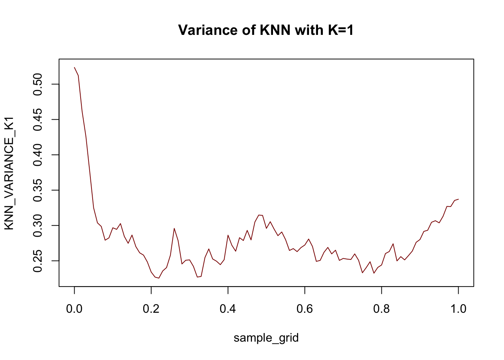
To generate training data from this model, we simply implement the PRNG components:
x_train <- runif(25, 0, 1) # 25 training points
y_train <- rnorm(25, mean=yfun(x_train), sd=0.5)
plot(x, y_mean, type="l",
xlab="X", ylab="E[X]",
cex.lab=1.5)
points(x_train, y_train)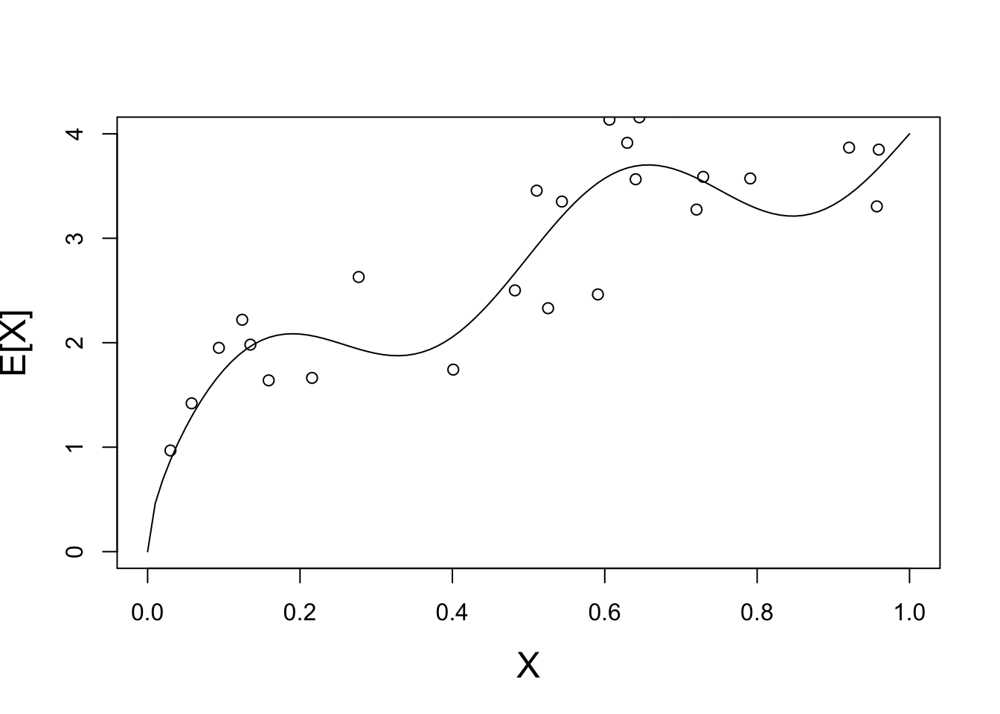
We have some variance of course, but we can still “squint” to get the right shape of our function. Let’s see how KNN looks on this data.
We start with \(K=1\):
X_train <- matrix(x_train, ncol=1)
plot_grid <- matrix(seq(0, 1, length.out=101), ncol=1)
Y_hat <- knn.reg(train=X_train, y=y_train, k=1, test=plot_grid)$pred
plot(x, y_mean, type="l",
xlab="X", ylab="E[X]",
cex.lab=1.5)
points(x_train, y_train)
lines(plot_grid, Y_hat, col="red4", lwd=2)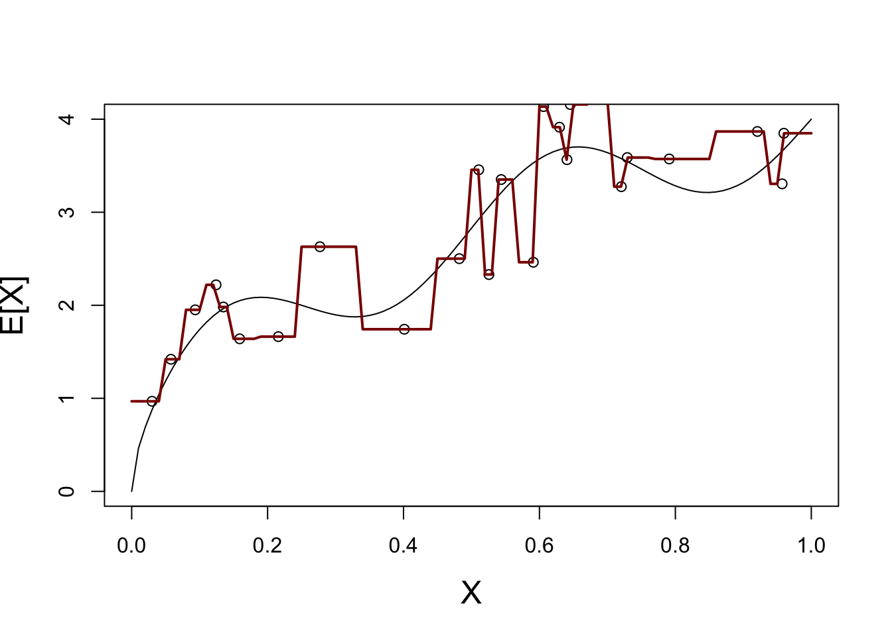
This is not a great fit - what happens if we repeat this process may times?
plot(x, y_mean, type="l",
xlab="X", ylab="E[X]",
cex.lab=1.5)
for(i in seq(1, 20)){
X_train <- matrix(runif(25, 0, 1), ncol=1)
y_train <- matrix(rnorm(25, mean=yfun(X_train), sd=0.5), ncol=1)
test_grid <- matrix(seq(0, 1, length.out=101), ncol=1)
Y_hat <- knn.reg(train=X_train, y=y_train, k=1, test=test_grid)$pred
lines(test_grid, Y_hat, col="#FFAA0099", lwd=0.5)
}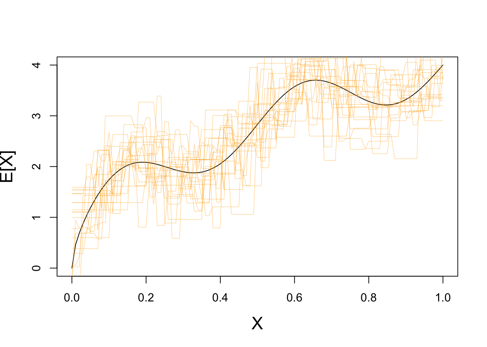
Clearly we have some variance!
If we repeat with a higher value of \(K\), we see far less variance:
plot(x, y_mean, type="l",
xlab="X", ylab="E[X]",
cex.lab=1.5)
for(i in seq(1, 20)){
X_train <- matrix(runif(25, 0, 1), ncol=1)
y_train <- matrix(rnorm(25, mean=yfun(X_train), sd=0.5), ncol=1)
plot_grid <- matrix(seq(0, 1, length.out=101), ncol=1)
Y_hat <- knn.reg(train=X_train, y=y_train, k=10, test=test_grid)$pred
lines(test_grid, Y_hat, col="#FFAA0099", lwd=0.5)
}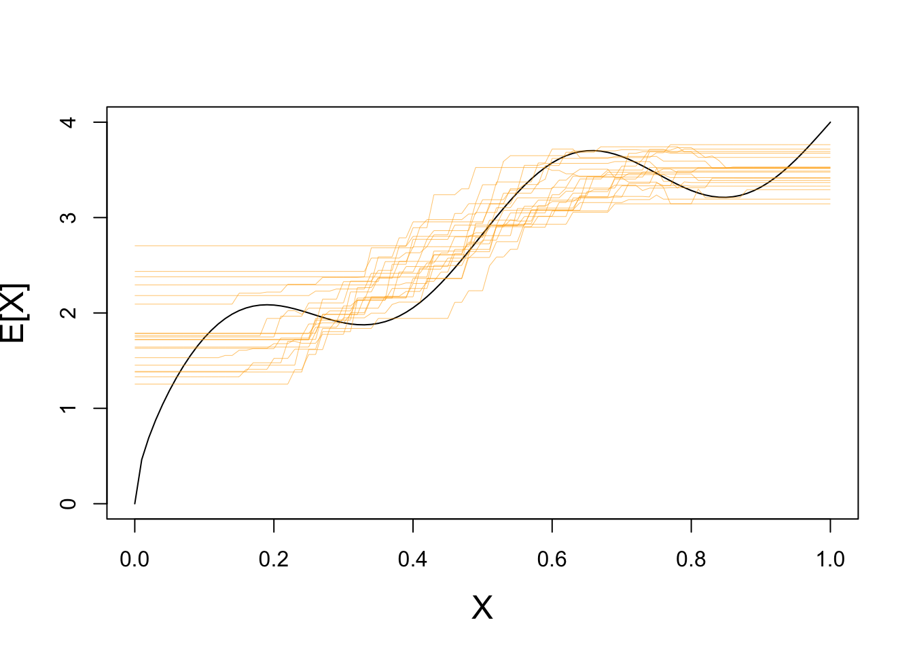
How well does KNN do on average?
That is, if we could repeat this process (infinitely) many times, how well would it recover the true regression function? Let’s try \(K=1\) and \(K=10\):
plot(x, y_mean, type="l",
xlab="X", ylab="E[X]",
cex.lab=1.5)
KNN_AVERAGE_PRED_K1 <- rowMeans(replicate(500, {
X_train <- matrix(runif(25, 0, 1), ncol=1)
y_train <- matrix(rnorm(25, mean=yfun(X_train), sd=0.5), ncol=1)
plot_grid <- matrix(seq(0, 1, length.out=101), ncol=1)
knn.reg(train=X_train, y=y_train, k=1, test=test_grid)$pred
}))
lines(test_grid, KNN_AVERAGE_PRED_K1, col="red4")
KNN_AVERAGE_PRED_K10 <- rowMeans(replicate(500, {
X_train <- matrix(runif(25, 0, 1), ncol=1)
y_train <- matrix(rnorm(25, mean=yfun(X_train), sd=0.5), ncol=1)
plot_grid <- matrix(seq(0, 1, length.out=101), ncol=1)
knn.reg(train=X_train, y=y_train, k=10, test=test_grid)$pred
}))
lines(test_grid, KNN_AVERAGE_PRED_K10, col="blue4")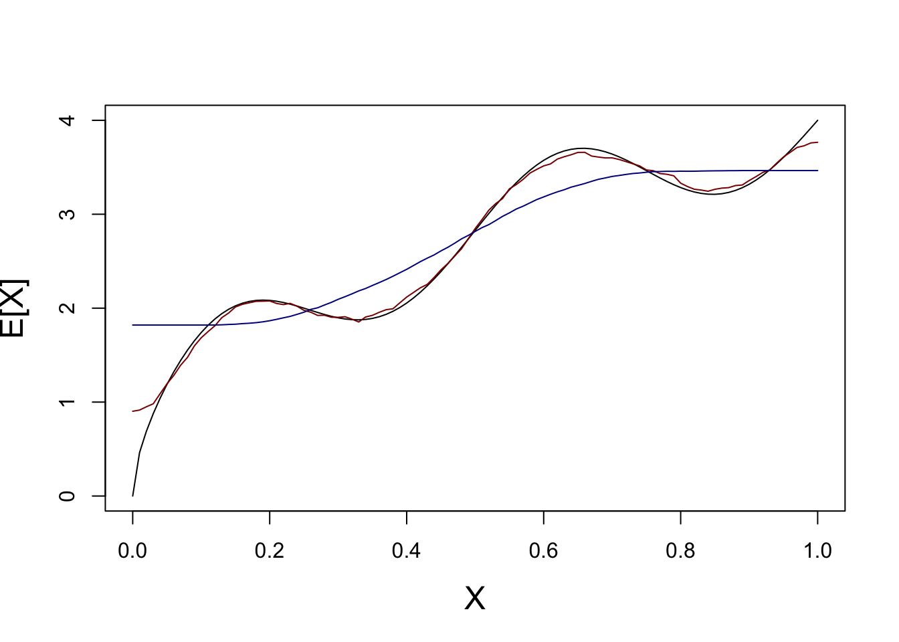
We see here that, on average, KNN with \(K=1\) (red) basically gets the function just right - no bias!
On the other hand, because KNN with \(K=10\) smooths out the function, we see systematic errors (here oversmoothing). That’s some bias.
So which is better? - \(K=1\) - High variance, but low bias - \(K=10\) - Low variance, but high bias
We’ll have to look at some test error to see. For now, we’ll generate our test data exactly the same way as we generate our training data:
KNN_K1_ERROR <- replicate(500, {
X_train <- matrix(runif(25, 0, 1), ncol=1)
y_train <- matrix(rnorm(25, mean=yfun(X_train), sd=0.5), ncol=1)
plot_grid <- matrix(seq(0, 1, length.out=101), ncol=1)
# Generate from same model as before
X_test <- matrix(runif(25, 0, 1), ncol=1)
y_test <- matrix(rnorm(25, mean=yfun(X_train), sd=0.5), ncol=1)
y_hat <- knn.reg(train=X_train, y=y_train, k=1, test=X_test)$pred
err = y_test - y_hat
})
KNN_K1_MSE <- mean(rowMeans(KNN_K1_ERROR^2))
KNN_K10_ERROR <- replicate(500, {
X_train <- matrix(runif(25, 0, 1), ncol=1)
y_train <- matrix(rnorm(25, mean=yfun(X_train), sd=0.5), ncol=1)
plot_grid <- matrix(seq(0, 1, length.out=101), ncol=1)
# Generate from same model as before
X_test <- matrix(runif(25, 0, 1), ncol=1)
y_test <- matrix(rnorm(25, mean=yfun(X_train), sd=0.5), ncol=1)
y_hat <- knn.reg(train=X_train, y=y_train, k=10, test=X_test)$pred
err = y_test - y_hat
})
KNN_K10_MSE <- mean(rowMeans(KNN_K10_ERROR^2))
cbind(K1_MSE = KNN_K1_MSE,
K10_MSE = KNN_K10_MSE) K1_MSE K10_MSE
[1,] 1.997453 1.50206\(K=10\) does better overall!
But does it do better everywhere or are some parts of the problem better for \(K=1\)?
Now we’ll be systematic in our test data - spacing it equally on the grid and computing ‘pointwise’ MSE:
KNN_K1_ERROR <- replicate(500, {
X_train <- matrix(runif(25, 0, 1), ncol=1)
y_train <- matrix(rnorm(25, mean=yfun(X_train), sd=0.5), ncol=1)
# Generate from same model as before
test_grid <- seq(0, 1, length.out=101)
X_test <- matrix(runif(test_grid, 0, 1), ncol=1)
y_test <- matrix(rnorm(test_grid, mean=yfun(X_test), sd=0.5), ncol=1)
y_hat <- knn.reg(train=X_train, y=y_train, k=1, test=X_test)$pred
err = y_test - y_hat
})
KNN_K1_MSE <- rowMeans(KNN_K1_ERROR^2)
KNN_K10_ERROR <- replicate(500, {
X_train <- matrix(runif(25, 0, 1), ncol=1)
y_train <- matrix(rnorm(25, mean=yfun(X_train), sd=0.5), ncol=1)
test_grid <- seq(0, 1, length.out=101)
X_test <- matrix(runif(test_grid, 0, 1), ncol=1)
y_test <- matrix(rnorm(101, mean=yfun(X_test), sd=0.5), ncol=1)
y_hat <- knn.reg(train=X_train, y=y_train, k=10, test=X_test)$pred
err = y_test - y_hat
})
KNN_K10_MSE <- rowMeans(KNN_K10_ERROR^2)
plot(KNN_K1_MSE, col="blue4", pch=16, ylim=c(0, 1))
points(KNN_K10_MSE, col="red4", pch=16)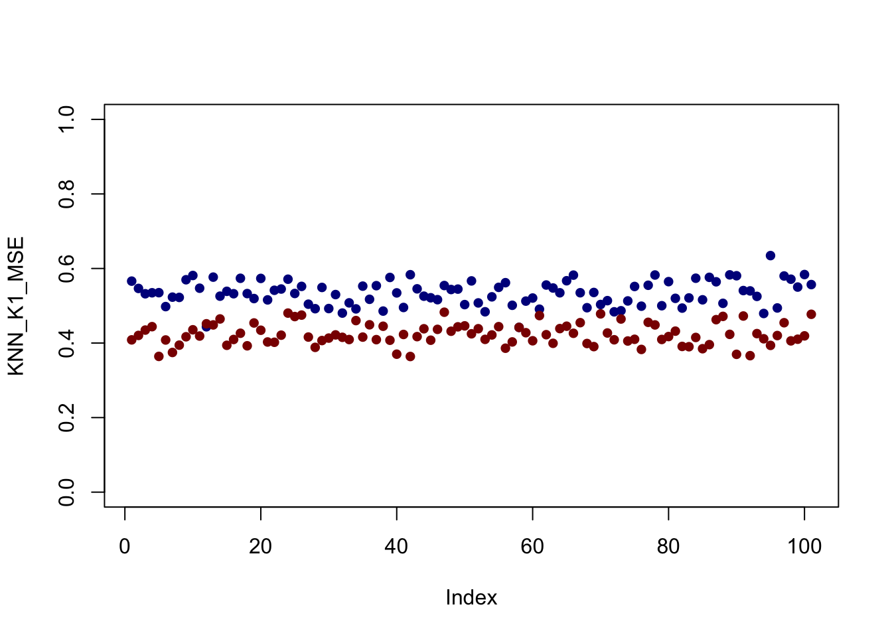
It looks like - for this set up at least - \(K=10\) is better everywhere but that’s not always the case.
Play around with the size of the training data, the noise in the samples, and the data generating function (yfun) to see if you can get different behavior.
Also - is \(K=10\) really the optimal choice here? What would happen if we changed \(n\)?
So, now that we have a good sense of (average) test error, can we verify our MSE decomposition?
Recall \[\begin{align*} \E[\MSE] &= \text{Bias}^2 + \text{Variance} + \text{Irreducible Error} \\ \text{ where } \text{Bias}^2 &= \E\left[\left(\E[\hat{y}] - \E[y]\right)^2\right] \\ &= \left(\E[\hat{y}] - \E[y]\right)^2 \text{ (Why can I drop the outer expectation?)} \\ \text{Variance} &= \E\left[\left(\hat{y} - \E[\hat{y}]\right)^2\right] \\ \text{Irreducible Error} &= \E\left[\left(y - \E[y]\right)^2\right] \end{align*}\]
(Make sure you understand these definitions and how they work together!)
Let’s work these out using all the tools we built before.
First, for the bias: - we already have \(\E[y]\) - this is just the yfun we selected - we can compute \(\E[\hat{y}]\) by running KNN many times and averaging the result
sample_grid <- matrix(seq(0, 1, length.out=101), ncol=1)
KNN_AVERAGE_PRED_K1 <- rowMeans(replicate(500, {
X_train <- matrix(runif(25, 0, 1), ncol=1)
y_train <- matrix(rnorm(25, mean=yfun(X_train), sd=0.5), ncol=1)
knn.reg(train=X_train, y=y_train, k=1, test=sample_grid)$pred
}))
KNN_BIAS_K1 <- KNN_AVERAGE_PRED_K1 - yfun(sample_grid)
plot(sample_grid, KNN_BIAS_K1^2, col="red4",
type="l", main="Squared Bias of KNN with K=1")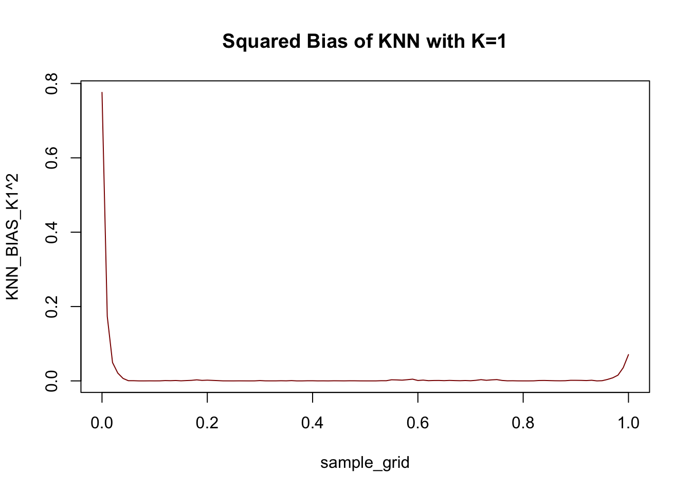
Not too much bias, but things do go a bit off the rails near the end points.
Next, we can compute variance pointwise:
sample_grid <- matrix(seq(0, 1, length.out=101), ncol=1)
KNN_VARIANCE_K1 <- rowMeans(replicate(500, {
X_train <- matrix(runif(25, 0, 1), ncol=1)
y_train <- matrix(rnorm(25, mean=yfun(X_train), sd=0.5), ncol=1)
(knn.reg(train=X_train, y=y_train, k=1, test=sample_grid)$pred - KNN_AVERAGE_PRED_K1)^2
}))
plot(sample_grid, KNN_VARIANCE_K1, col="red4",
type="l", main="Variance of KNN with K=1")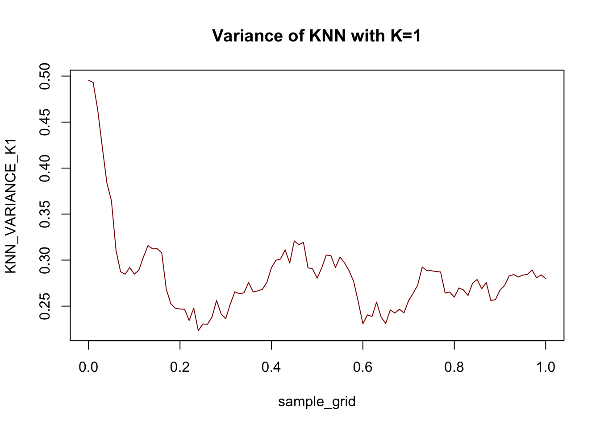
For this data at least, the variance term is generally larger than the bias term: this is what we expect with a very flexible (high variance + low bias) model like \(1\)-NN.
Finally, irreducible error is just 0.25 everywhere (recall \(y \sim \Ncal(\E[y], 0.25)\)).
KNN_IE <- rowMeans(replicate(500, {
sample_grid <- matrix(seq(0, 1, length.out=101), ncol=1)
X_test <- matrix(sample_grid, ncol=1)
y_test <- matrix(rnorm(sample_grid, mean=yfun(X_test), sd=0.5), ncol=1)
y_best_pred <- matrix(yfun(X_test), ncol=1)
(as.vector(y_best_pred - y_test))^2
}))
plot(KNN_IE)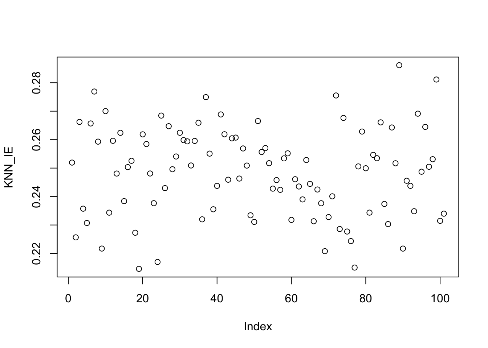
Put these together and we see the decomposition in action:
as compared to
mean(KNN_K1_MSE)[1] 0.5335582Visually,
library(dplyr)
library(tidyverse)
DECOMP_DATA <- data.frame(
sample_grid = sample_grid,
KNN_K1_BIAS2 = KNN_BIAS_K1^2,
KNN_K1_VARIANCE=KNN_VARIANCE_K1,
KNN_K1_IE = KNN_IE,
KNN_K1_MSE = KNN_K1_MSE) |>
pivot_longer(-sample_grid) |>
mutate(Error=value,
Type=case_when(
name=="KNN_K1_BIAS2" ~ "Bias^2",
name=="KNN_K1_IE" ~ "Irreducible Error",
name=="KNN_K1_VARIANCE" ~ "Variance",
name=="KNN_K1_MSE" ~ "Total Error"))
ggplot() +
geom_bar(data=DECOMP_DATA |> filter(Type != "Total Error"),
mapping=aes(x=sample_grid, y=Error, color=Type),
stat="identity") +
geom_line(data=DECOMP_DATA |> filter(Type == "Total Error"),
mapping=aes(x=sample_grid, y=Error),
color="red4", linewidth=2) +
xlab("X") + ylab("Test Error")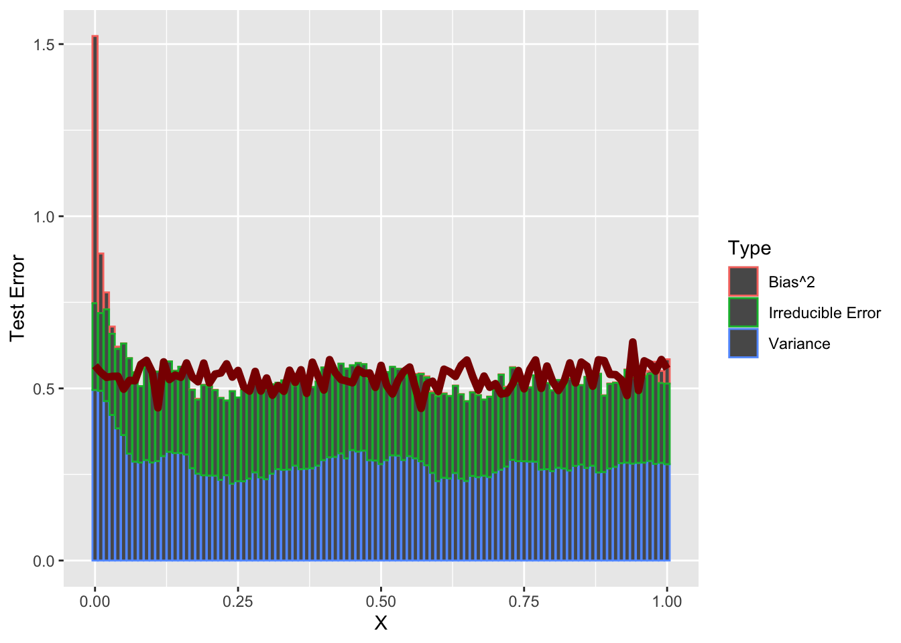
So a bit of weirdness at the left end point - but holds up as well as we might expect for \(N=25\) samples.
How do the relative magnitudes of these terms change as you adjust the parameters of the simulation?
Introduction to Convex Optimization
In this course, we will frequently want to find the minimizer of certain functions. Typically, these will arise as ERMs and the function will take a \(p\)-vector of inputs, e.g. regression coefficients, and produce a scalar loss output. Let us generally call this function \(f: \R^p \to \R\).
In some circumstances, we can take the derivative of \(f\), typically called the gradient in this context, and set it equal to zero. For example, suppose we want to minimize an expression of the form:
\[f(\bx) = \frac{1}{2}\bx^{\top}\bA\bx + \bb^{\top}\bx + c\]
where \(\bA\) is a symmetric strictly positive-definite matrix, \(\bb\) is an arbitrary \(p\)-vector, and \(c\) is a constant. Taking the gradient, we find
\[ \frac{\partial f}{\partial \bx} = \bA\bx + \bb\]
We set this to zero and find a crticial point at:
\[\begin{align*} \bzero &= \bA\bx + \bb \\ - \bb &= \bA\bx \\ \implies \bx &= -\bA^{-1}\bb \end{align*}\]
assuming that \(\bA\) is invertible. (Here, invertibility is implied by assuming \(\bA\) is strictly positive-definite.) As usual, we are not quite done here, as we must also check that this is a minimizer and not a maximizer or a saddle point. To do so, we take the second derivative to find
\[ \frac{\partial}{\partial \bx}\frac{\partial f}{\partial \bx} = \bA\]
In this multivariate context, we need the second derivative, a.k.a the Hessian, to be strictly positive-definite to guarantee that we have found a minimizer and this is indeed exactly what we assumed above. As discussed above, ‘definiteness’ plays the role of sign for many applications of matrix-ness. Here, by assuming strictly positive definite, we are essentially treating the matrix as strictly positive (\(>0\)), which is exactly the condition we need to guarantee a minimizer in the scalar case as well.
Hence, we have that the one minimizer of \(f\) is found at \(\bx_* = \bA^{-1}\bb\). Compare this to the scalar case of minimizing a quadratic \(\frac{1}{2}ax^2 + bx + c\) with minimizer at \(x = -b/a\).6
The above analysis works well, but it is essentially the only minimization we will be able to do in closed form in this course.7
For other functions, we will need to apply optimization: the mathematical toolkit for finding minimizers (or maximizers) of functions. Fortunately for us, many of the methods we begin this course with fall in the realm of convex optimization, a particularly nice branch of optimization.
Convex Optimization refers to the problem of minimizing convex functions over convex sets. Let’s define both of these:
-
A convex function is one which satisfies this inequality at all points: \[f(\lambda \bx + (1-\lambda)\by) \leq \lambda f(\bx) + (1-\lambda) f(\by)\]
for any \(\bx, \by\) and any \(\lambda \in [0, 1]\).
This definition is a bit non-intuitive, but it basically implies that we have a “bowl-like” function. This definition captures the idea that the actual function value is always less than we might get from linear interpolation. A picture is helpful here:
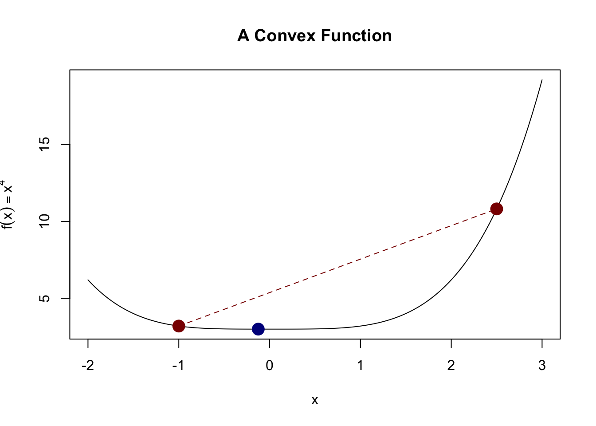
Here, we see that the actual value of the function (blue dot) is less than what we would get if we interpolated the two red points (red line).
An alternative definition is that if \(f\) is twice-differentiable, its Hessian (2nd derivative matrix) is positive semi-definite.
-
A convex set is one that allows us to look “between” points. Specifically, a set \(\Ccal \subseteq \R^p\) is convex if \[\bx, \by \in \Ccal \implies \lambda \bx + (1-\lambda)\by \in \Ccal\]
for all \(\bx, \by \in \Ccal\) and any \(\lambda \in [0, 1]\).
Clearly these are related by the idea of looking “between” two points:
- Convex functions guarantee that this will produce something lower than naive interpolation; and
- Convex sets guarantee that the midpoint will be “allowable”.
To tie these together, note another alternative characterization of a convex function: one whose epigraph (the area above the curve in the plot) is a convex set.
For optimization purposes, these two properties imply a rather remarkable fact:
If \(\bx_0\) is a local minimum of \[\min_{\bx \in \Ccal} f(\bx)\], then it is a global minimum.
This is quite shocking: if we find a point where we can’t improve by going in any direction, we are guaranteed to have found a global minimum and no point could be better. (It is possible to have multiple minimizers however: consider \(f(\bx) = 0\). Any choice of \(\bx\) is a global minimizer.) This lets us turn the “global” search problem into a “local” one.
Of course, this only helps us if we can find a local minimizer of \(f\). How might we do so? Let’s recall a basic calculus idea: the gradient of a function is a vector that points in the direction of greatest increase (the “steepest” uphill). So if we go in the opposite direction of the gradient, we actually will go “downhill”. In fact, this is basically all we need to start applying gradient descent.
Gradient Descent: Given a convex function \(f\):
- Initialize at (arbitrary) starting point \(\bx_0\).
- Initialize step counter \(k=0\).
- Repeat until convergence:
- Compute the gradient of \(f\) at \(\bx_k\): \(\left.\nabla f\right.|_{\bx=\bx_k}\)
- Set \(\bx_{k+1} = \bx_k - c \left.\nabla f\right.|_{\bx=\bx_k}\)
Repeated infinitely many times, this will converge to a local, and hence global, minimizer of \(f\). There are many variants of this basic idea8, mostly related to selecting the optimal step size \(c\), but this is the most important algorithm in convex optimization and it is important to understand it deeply.
We can apply it here to the 3D function \[f(\bx) = (x_1-2)^2 + (x_2-3)^2 + (x_3 - 4)^2.\] Clearly, we can see that the minimizer has to be at \((2, 3, 4)\), but our algorithm won’t use that fact.
Before we can implement this algorithm, we need the gradient, which is given by
\[f(\bx) = \left\|\bx - (2,3,4)^{\top}\right\|_2^2 \implies \nabla f = 2[\bx - (2, 3, 4)^{\top}]\]
x <- matrix(c(0, 0, 0), ncol=1) # We want to work exclusively with column vecs
converged <- FALSE
c <- 0.001 # Small step size
f <- function(x) sum((x - c(2, 3, 4))^2)
grad <- function(x) 2 * (x - matrix(c(2, 3, 4), ncol=1))
while(!converged){
g <- grad(x)
x_new <- x - c * g
if(sum(abs(x - x_new)) < 1e-5){
converged <- TRUE
}
x <- x_new
}
x [,1]
[1,] 1.998893
[2,] 2.998340
[3,] 3.997787We don’t get the exact minimizer, but we certainly get something ‘close enough’ for our purposes. In Report #01, you will use gradient descent and some variants to study the least squares problem.
Often, we will want to see how the value of \(f(\bx_k)\) changes over the course of the optimization. We expect that it will go down monotonically, but it may not be worth continuing the optimization if we have reached a point of ‘diminishing returns.’ You can do this by hand (evaluating \(f\) after each update and storing the results), but many optimizers will often track this automatically for you: e.g. TensorBoard.9
Footnotes
In addition to the ‘physics’ of it (push twice as hard, go twice as far), we are used to these types of linear type relationships in statistics: if we have some measurements in yards and re-express them in feet by multiplying by three, it’s very useful that the standard deviation is just multipled by 3 without any added terms.↩︎
This is not too hard to show, but the book-keeping is annoying. In essence, given a linear function, we ‘build’ a matrix for it by seeing how it applies to the standard basis vectors and then, by linearity, argue that that matrix has to give the same value as the function for all possible inputs.↩︎
I am oversimplifying here: there are also ‘reflections’ that satisfy this requirement (e.g., a matrix mapping \((0, 1)\) to \((0, -1)\) but \((1, 0)\) to \((1,0)\) - this flips across the \(y\)-axis but isn’t a “rotation”). This distinction doesn’t really come up in our class and the more general category of “orthogonal” is all we really need anyways.↩︎
Computers are not perfectly accurate, so if you do this calculation yourself, you’ll get numbers around \(\pm 3 \times 10^{-16}\). These are basically zero and we can use the
zapsmallfunction to set them to zero.↩︎The Bias-Variance decomposition (and tradeoff) holds approximately for other loss functions, though the math is only this nice for MSE.↩︎
Note that we can only minimize this quadratic in the case where \(a\) is strictly positive so the parabola is upward facing. This is the scalar equivalent of the strict positive-definiteness condition we put on \(\bA\).↩︎
OLS and some basic variants (ridge regression) can be written in this ‘quadratic’ style. Can you see why?↩︎
For instance, of the 14 optimization algorithms included in base
pytorch, all but one are advanced versions of gradient descent. The exception isLBFGSwhich attempts to (approximately) use both the gradient and the Hessian (second derivative); computing the Hessian is normally quite expensive, soLBFGSuses some clever tricks to approximate the Hessian.↩︎-
Modern ML toolkits like
pytorchorTensorFloware (at heart) fancy systems to do two things automatically that we did ‘by hand’ in this example:- Compute gradients via a process known as ‘back-propogation’ or ‘autodiff’
- Implement (fancy) gradient descent